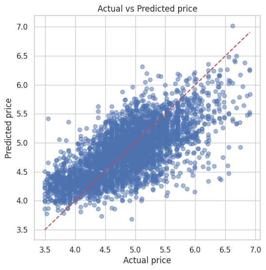

房價預測與互動模擬
透過我們的分析，了解影響紐約房價的關鍵，並親手模擬您的理想房價！
房價模擬器
臥室數量:
1
0
5
床位數量:
1
1
10
衛浴數量:
1.0
0
5
預期評分:
4.5
3
5
行政區
Bronx
Brooklyn
Manhattan
Queens
Staten Island
房型
Entire home/apt
Hotel room
Private room
Shared room
預測每晚價格
$0.00
*此為基於線性迴歸模型的簡化模擬結果，實際價格可能因其他因素變動。
模型預測結果解讀
我們使用線性迴歸模型來預測房價，以下是評估指標：
R² (判定係數): 0.4816 (這代表我們的模型能夠解釋約 48.2% 的房價變異)
RMSE (均方根誤差): $94.84 (此數值表示模型的預測價格與實際價格平均相差約 95 美元，可作為您規劃預算時的參考。)
